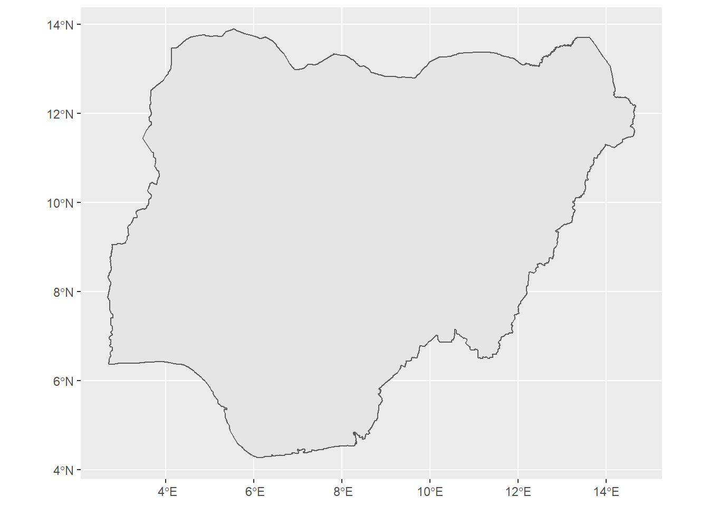
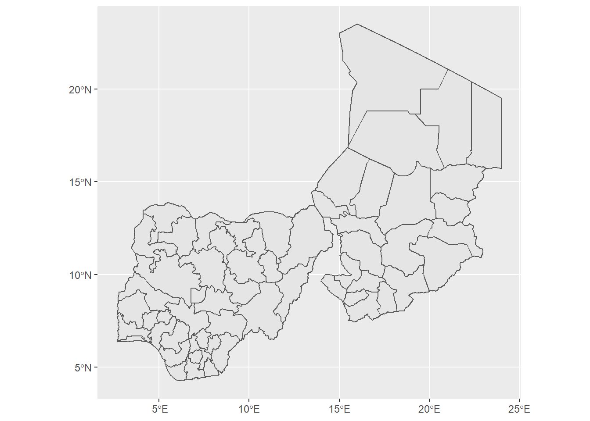
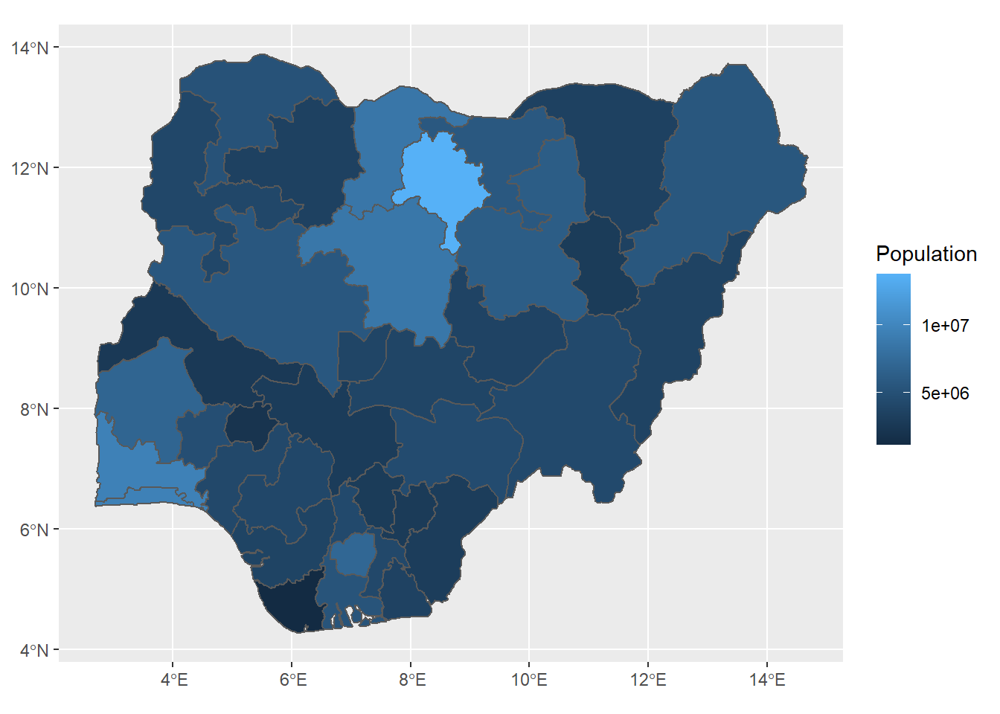
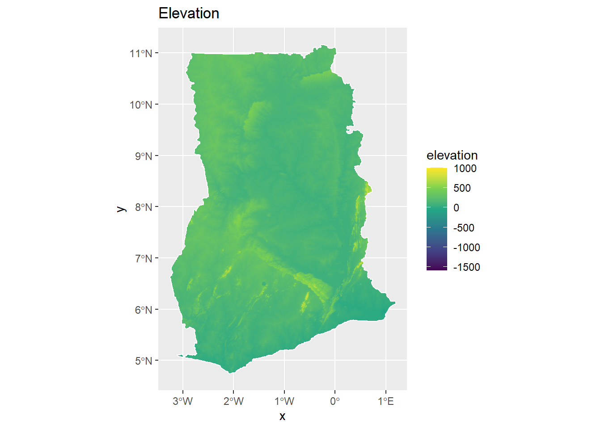
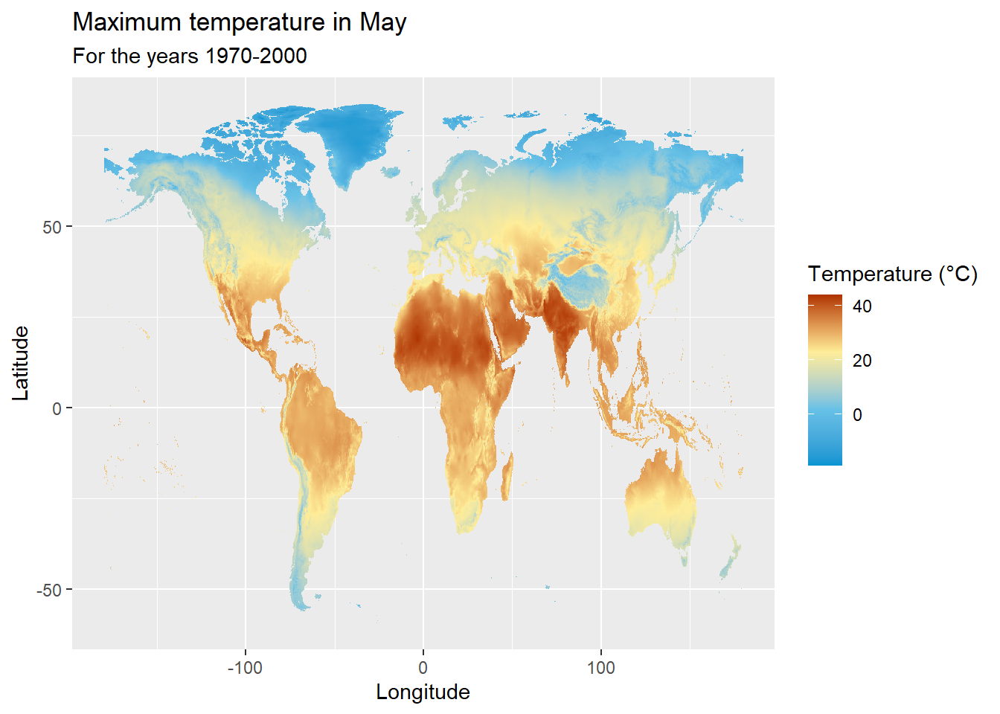
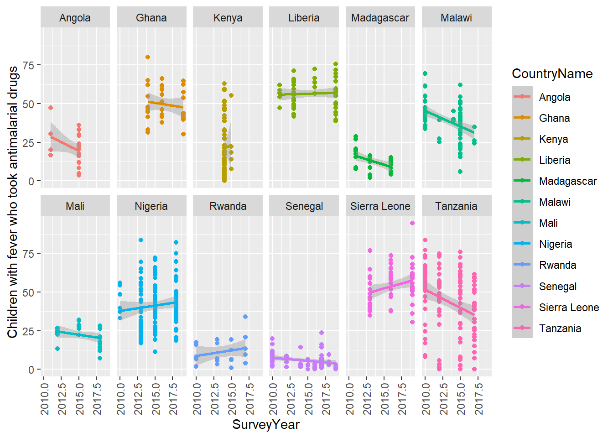
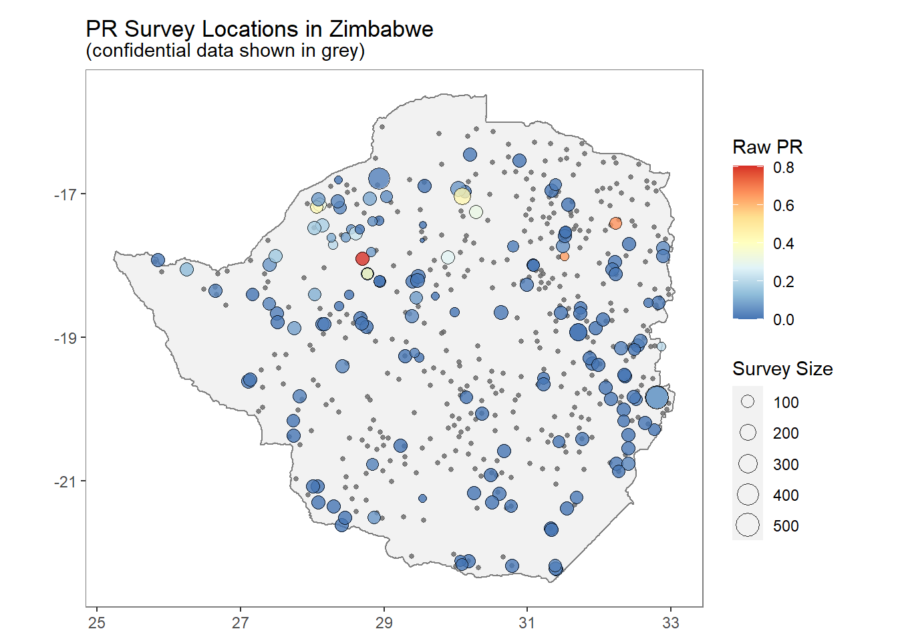

Chapter 7 Sources of data
Here we show several R packages that can be used to download spatial data including administrative boundaries, population, climatic, and health data. We give short reproducible examples on how to download and visualize spatial data that can be useful in different settings. More extended examples and details about the capabilities of each of the packages can be seen at https://rspatialdata.github.io/ and the packages’ websites.
7.1 Administrative boundaries
We can download administrative boundaries of countries with the rgeoboundaries package.
For example, we can download the administrative boundaries of Nigeria with geoboundaries() as follows.
library(rgeoboundaries)
library(ggplot2)
map <- geoboundaries("Nigeria")
ggplot(data = map) + geom_sf() 
We can also download administrative boundaries of multiple countries and different administrative levels.
map <- geoboundaries(c("Nigeria", "Chad"), "adm1")
ggplot(data = map) + geom_sf()
7.2 Population
The wopr package provides access to the WorldPop Open Population Repository and provides estimates of population sizes for specific geographic areas.
To download the population data we first use getCatalogue() to retrieve the WOPR data catalogue and see a list of currently available databases.
#install.packages("remotes")
library(remotes)## Warning: package 'remotes' was built under R version 4.0.5remotes::install_github('wpgp/wopr')## Skipping install of 'wopr' from a github remote, the SHA1 (6a4abcf0) has not changed since last install.
## Use `force = TRUE` to force installationlibrary(wopr)
catalogue <- getCatalogue(spatial_query = T)## Registered S3 method overwritten by 'httr':
## method from
## print.cache_info hoardrcatalogue## country version
## 25 BFA v1.0
## 64 COD v1.0
## 70 COD v2.0
## 134 GHA v2.0
## 197 MOZ v1.1
## 241 NGA v1.2
## 281 SSD v2.0
## 338 ZMB v1.0Then, we subset the catalogue for the country (e.g. Nigeria with ISO code NGA) and download the data for the selection using the downloadData() function.
selection <- subset(catalogue, country == "NGA" & category == "Population" & version == "v1.2")
downloadData(selection)Finally, we use the sf package to read in the downloaded shapefile and plot it with ggplot().
[Paula: I’ve set this to eval=FALSE for now to avoid filenotfound error, can we make this runnable ?, Andy]
library(sf)
library(ggplot2)
map <- st_read("data/NGA_population_v1_2_admin_level2_boundaries.shp")## Reading layer `NGA_population_v1_2_admin_level2_boundaries' from data source `C:\Users\User\OneDrive - University of Leeds\Documents\afrimapr-book\data\NGA_population_v1_2_admin_level2_boundaries.shp' using driver `ESRI Shapefile'
## Simple feature collection with 37 features and 17 fields
## Geometry type: MULTIPOLYGON
## Dimension: XY
## Bounding box: xmin: 2.6925 ymin: 4.271484 xmax: 14.67797 ymax: 13.88571
## Geodetic CRS: WGS 84ggplot(map, aes(fill = mean)) + geom_sf() +
scale_fill_continuous(name = "Population")
7.3 Open Street Map data
We can retrieve Open Street Map data using the osmdata package. The available_features() function can be used to get the list of recognized features in OSM.
The available_tags() function lists out the tags associated with each feature.
A list of the available features can be found in the OSM wiki.
library(osmdata)## Warning: package 'osmdata' was built under R version 4.0.5## Data (c) OpenStreetMap contributors, ODbL 1.0. https://www.openstreetmap.org/copyrighthead(available_features())## [1] "4wd_only" "abandoned" "abutters" "access" "addr" "addr:city"head(available_tags("amenity"))## [1] "animal_boarding" "animal_breeding" "animal_shelter" "arts_centre" "atm" "baby_hatch"The first step in creating an osmdata query is defining the geographical area we wish to include in the query. This can be done by defining a bounding box that defines a geographical area by its bounding latitudes and longitudes.
lagos_bb <- getbb("Lagos")
lagos_bb## min max
## x 3.234180 3.554180
## y 6.295058 6.615057To retrieve the required features of a place (defined by the bounding box), we have to then create an overpass query with opq().
Then, the add_osm_feature() function can be used to add the required features to the query. Finally, we use the osmdata_sf() function to obtain a simple feature object of the resultant query.
lagos_hospitals <- lagos_bb %>% opq() %>%
add_osm_feature(key = "amenity", value = "hospital") %>%
osmdata_sf()We can visualise an interactive map of the hospitals in Lagos as follows.
library(leaflet)
leaflet() %>% addTiles() %>%
addPolygons(data = lagos_hospitals$osm_polygons,
label = lagos_hospitals$osm_polygons$name)7.4 Elevation
The elevatr package can be used to download elevation data.
We can use get_elev_raster() to obtain the elevation of Ghana as follows.
install.packages("elevatr")## Installing package into 'C:/Users/User/OneDrive - University of Leeds/Documents/R/win-library/4.0'
## (as 'lib' is unspecified)## package 'elevatr' successfully unpacked and MD5 sums checked
##
## The downloaded binary packages are in
## C:\Users\User\AppData\Local\Temp\RtmpYTcVDa\downloaded_packageslibrary(ggplot2)
library(raster)
library(elevatr)## Warning: package 'elevatr' was built under R version 4.0.5library(rgeoboundaries)
library(sf)
library(viridis)## Loading required package: viridisLitemap <- geoboundaries("Ghana")
elevation_data <- get_elev_raster(locations = map, z = 9, clip = "locations") ## Warning in st_buffer.sfc(st_geometry(x), dist, nQuadSegs, endCapStyle = endCapStyle, : st_buffer does not correctly buffer longitude/
## latitude data## dist is assumed to be in decimal degrees (arc_degrees).##
Downloading DEMs [>--------------------------] 2% eta: 41s
Downloading DEMs [>--------------------------] 3% eta: 37s
Downloading DEMs [>--------------------------] 4% eta: 33s
Downloading DEMs [>--------------------------] 5% eta: 30s
Downloading DEMs [=>-------------------------] 6% eta: 27s
Downloading DEMs [=>-------------------------] 7% eta: 26s
Downloading DEMs [=>-------------------------] 8% eta: 24s
Downloading DEMs [==>------------------------] 9% eta: 23s
Downloading DEMs [==>------------------------] 10% eta: 22s
Downloading DEMs [==>------------------------] 11% eta: 22s
Downloading DEMs [==>------------------------] 12% eta: 21s
Downloading DEMs [===>-----------------------] 14% eta: 20s
Downloading DEMs [===>-----------------------] 15% eta: 20s
Downloading DEMs [===>-----------------------] 16% eta: 19s
Downloading DEMs [===>-----------------------] 17% eta: 19s
Downloading DEMs [====>----------------------] 18% eta: 18s
Downloading DEMs [====>----------------------] 19% eta: 19s
Downloading DEMs [====>----------------------] 20% eta: 18s
Downloading DEMs [=====>---------------------] 21% eta: 18s
Downloading DEMs [=====>---------------------] 22% eta: 18s
Downloading DEMs [=====>---------------------] 23% eta: 18s
Downloading DEMs [=====>---------------------] 24% eta: 18s
Downloading DEMs [======>--------------------] 25% eta: 17s
Downloading DEMs [======>--------------------] 26% eta: 17s
Downloading DEMs [======>--------------------] 27% eta: 17s
Downloading DEMs [=======>-------------------] 28% eta: 16s
Downloading DEMs [=======>-------------------] 29% eta: 16s
Downloading DEMs [=======>-------------------] 30% eta: 16s
Downloading DEMs [=======>-------------------] 31% eta: 16s
Downloading DEMs [========>------------------] 32% eta: 16s
Downloading DEMs [========>------------------] 33% eta: 15s
Downloading DEMs [========>------------------] 34% eta: 15s
Downloading DEMs [=========>-----------------] 35% eta: 15s
Downloading DEMs [=========>-----------------] 36% eta: 15s
Downloading DEMs [=========>-----------------] 38% eta: 15s
Downloading DEMs [=========>-----------------] 39% eta: 14s
Downloading DEMs [==========>----------------] 40% eta: 14s
Downloading DEMs [==========>----------------] 41% eta: 14s
Downloading DEMs [==========>----------------] 42% eta: 14s
Downloading DEMs [===========>---------------] 43% eta: 14s
Downloading DEMs [===========>---------------] 44% eta: 13s
Downloading DEMs [===========>---------------] 45% eta: 13s
Downloading DEMs [===========>---------------] 46% eta: 13s
Downloading DEMs [============>--------------] 47% eta: 12s
Downloading DEMs [============>--------------] 48% eta: 12s
Downloading DEMs [============>--------------] 49% eta: 12s
Downloading DEMs [=============>-------------] 50% eta: 12s
Downloading DEMs [=============>-------------] 51% eta: 11s
Downloading DEMs [=============>-------------] 52% eta: 11s
Downloading DEMs [=============>-------------] 53% eta: 11s
Downloading DEMs [==============>------------] 54% eta: 11s
Downloading DEMs [==============>------------] 55% eta: 10s
Downloading DEMs [==============>------------] 56% eta: 10s
Downloading DEMs [==============>------------] 57% eta: 10s
Downloading DEMs [===============>-----------] 58% eta: 10s
Downloading DEMs [===============>-----------] 59% eta: 9s
Downloading DEMs [===============>-----------] 60% eta: 9s
Downloading DEMs [================>----------] 61% eta: 9s
Downloading DEMs [================>----------] 62% eta: 9s
Downloading DEMs [================>----------] 64% eta: 9s
Downloading DEMs [================>----------] 65% eta: 8s
Downloading DEMs [=================>---------] 66% eta: 8s
Downloading DEMs [=================>---------] 67% eta: 8s
Downloading DEMs [=================>---------] 68% eta: 8s
Downloading DEMs [==================>--------] 69% eta: 7s
Downloading DEMs [==================>--------] 70% eta: 7s
Downloading DEMs [==================>--------] 71% eta: 7s
Downloading DEMs [==================>--------] 72% eta: 7s
Downloading DEMs [===================>-------] 73% eta: 6s
Downloading DEMs [===================>-------] 74% eta: 6s
Downloading DEMs [===================>-------] 75% eta: 6s
Downloading DEMs [====================>------] 76% eta: 6s
Downloading DEMs [====================>------] 77% eta: 6s
Downloading DEMs [====================>------] 78% eta: 6s
Downloading DEMs [====================>------] 79% eta: 5s
Downloading DEMs [=====================>-----] 80% eta: 5s
Downloading DEMs [=====================>-----] 81% eta: 5s
Downloading DEMs [=====================>-----] 82% eta: 5s
Downloading DEMs [=====================>-----] 83% eta: 4s
Downloading DEMs [======================>----] 84% eta: 4s
Downloading DEMs [======================>----] 85% eta: 4s
Downloading DEMs [======================>----] 86% eta: 4s
Downloading DEMs [=======================>---] 88% eta: 3s
Downloading DEMs [=======================>---] 89% eta: 3s
Downloading DEMs [=======================>---] 90% eta: 3s
Downloading DEMs [=======================>---] 91% eta: 3s
Downloading DEMs [========================>--] 92% eta: 2s
Downloading DEMs [========================>--] 93% eta: 2s
Downloading DEMs [========================>--] 94% eta: 2s
Downloading DEMs [=========================>-] 95% eta: 1s
Downloading DEMs [=========================>-] 96% eta: 1s
Downloading DEMs [=========================>-] 97% eta: 1s
Downloading DEMs [=========================>-] 98% eta: 1s
Downloading DEMs [==========================>] 99% eta: 0s
Downloading DEMs [===========================] 100% eta: 0s
## Mosaicing & Projecting
## Clipping DEM to locations
## Note: Elevation units are in meters.
## Note: The coordinate reference system is:
## GEOGCRS["WGS 84 (with axis order normalized for visualization)",
## DATUM["World Geodetic System 1984",
## ELLIPSOID["WGS 84",6378137,298.257223563,
## LENGTHUNIT["metre",1]]],
## PRIMEM["Greenwich",0,
## ANGLEUNIT["degree",0.0174532925199433]],
## CS[ellipsoidal,2],
## AXIS["geodetic longitude (Lon)",east,
## ORDER[1],
## ANGLEUNIT["degree",0.0174532925199433,
## ID["EPSG",9122]]],
## AXIS["geodetic latitude (Lat)",north,
## ORDER[2],
## ANGLEUNIT["degree",0.0174532925199433,
## ID["EPSG",9122]]]]elevation_data <- as.data.frame(elevation_data, xy = TRUE)
colnames(elevation_data)[3] = "elevation"
#remove rows of data frame with one or more NA's using complete.cases
elevation_data <- elevation_data[complete.cases(elevation_data), ]
ggplot() + geom_raster(data = elevation_data, aes(x = x, y = y, fill = elevation)) +
geom_sf(data = map, color = "white", fill = NA) +
coord_sf() + scale_fill_viridis_c() + ggtitle("Elevation")
7.5 Temperature
The raster package provides access to the WorldClim database, and allows us to download data sets on the many different climatic conditions.
For example, we can can download maximum temperature at a resolution of 10 minutes as follows.
library(raster)
library(ggplot2)
tmax_data <- getData(name = "worldclim", var = "tmax", res = 10)
# Degrees Celsius
gain(tmax_data) <- 0.1
# Converting the raster object into a dataframe
tmax_data_may_df <- as.data.frame(tmax_data$tmax5, xy = TRUE, na.rm = TRUE)
rownames(tmax_data_may_df) <- c()
# Plot
ggplot(data = tmax_data_may_df, aes(x=x,y=y)) + geom_raster(aes(fill = tmax5)) +
labs(title = "Maximum temperature in May", subtitle = "For the years 1970-2000") +
xlab("Longitude") + ylab("Latitude") +
scale_fill_gradientn(name = "Temperature (°C)", colours=c("#0094D1","#68C1E6", "#FEED99","#AF3301"), breaks = c(-20, 0, 20, 40))## Warning: Raster pixels are placed at uneven vertical intervals and will be shifted. Consider using geom_tile() instead.
7.6 Rainfall
The nasapower package aims at making it quick and easy to automate downloading NASA POWER (NASA Prediction of Worldwide Energy Resource) global meteorology, surface solar energy and climatology data.
For example, we can use get_power(), to obtain global rainfall (specifying pars = "PRECTOT") or humidity (specifying pars = "RH2M").
library(nasapower)
library(terra)
library(viridis)
climate_avg <- get_power(community = "AG", pars = "PRECTOT",
lonlat = "GLOBAL", temporal_average = "CLIMATOLOGY")
library("rnaturalearth")
map <- ne_countries(returnclass = "sf")
climate_box <- split(climate_avg, climate_avg$PARAMETER)
climate_box <- lapply(climate_box, function(x){
x["PARAMETER"] <- NULL
x})
climate_box <- lapply(X = climate_box, FUN = as.matrix)
#retrieving precipitation data using the above made climate_box() function
PRECTOT <- terra::rast(climate_box$PRECTOT[,c(1:2, 15)],
crs = "+proj=eqc +lat_ts=0 +lat_0=0 +lon_0=0 +x_0=0 +y_0=0 +ellps=WGS84 +datum=WGS84 +units=m +no_defs", type = "xyz")
#converting above raster object into a data.frame for mapping
PRECTOT_df <- as.data.frame(PRECTOT, xy = TRUE, na.rm = TRUE)
rownames(PRECTOT_df) <- c()
#plotting the graph
ggplot() +
geom_raster(data = PRECTOT_df, aes(x = x, y = y, fill = ANN)) +
geom_sf(data = map, inherit.aes = FALSE, fill = NA) +
scale_fill_viridis() +
labs(title = "Rainfall in inches", fill = "Annual Rainfall")7.7 Vegetation and Land cover
MODIStsp is an R package for downloading and preprocessing time series of raster data from MODIS data products.
Here, we use the ‘Vegetation Indices 16-Day L3 Global 250’ product with the product IDs MOD13Q1(Terra Product ID), and MYD13Q1(Aqua Product ID), but will be represented by M*D13Q1 - the second character is replaced by an asterix(*) to identify both Terra and Aqua.
We can also download the ‘Land Cover Type Yearly L3 Global 500m’ product with the product ID MCD12Q1 (Combined Aqua and Terra Product ID)
install.packages("MODIStsp")## Installing package into 'C:/Users/User/OneDrive - University of Leeds/Documents/R/win-library/4.0'
## (as 'lib' is unspecified)## package 'MODIStsp' successfully unpacked and MD5 sums checked
##
## The downloaded binary packages are in
## C:\Users\User\AppData\Local\Temp\RtmpYTcVDa\downloaded_packageslibrary(MODIStsp)## Warning: package 'MODIStsp' was built under R version 4.0.5library(rgeoboundaries)
library(sf)
# Downloading the country boundary
map_boundary <- geoboundaries("Kenya")
# Defining filepath to save downloaded spatial file
spatial_filepath <- "map.shp"
# Saving downloaded spatial file on to our computer
#st_write(map_boundary, paste0(spatial_filepath))MODIStsp(gui = FALSE,
out_folder = "VegetationData",
out_folder_mod = "VegetationData",
selprod = "Vegetation_Indexes_16Days_1Km (M*D13A2)",
bandsel = "NDVI",
user = "mstp_test" ,
password = "MSTP_test_01",
start_date = "2020.06.01",
end_date = "2020.06.01",
verbose = FALSE,
spatmeth = "file",
spafile = spatial_filepath,
out_format = "GTiff")[Paula: I’ve set this to eval=FALSE for now to avoid filenotfound error, can we make this runnable ?, Andy]
# Reading in the downloaded NDVI raster data
NDVI_raster <- raster("VegetationData/map/VI_16Days_1Km_v6/NDVI/MYD13A2_NDVI_2020_153.tif")
# Transforming the data
NDVI_raster <- projectRaster(NDVI_raster, crs = "+proj=longlat +ellps=WGS84 +datum=WGS84 +no_defs")
# Cropping the data
NDVI_raster <- raster::mask(NDVI_raster, as_Spatial(map_boundary))
# Dividing values by 10000 to have NDVI values between -1 and 1
gain(NDVI_raster) <- 0.0001
# Converting the raster object into a dataframe
NDVI_df <- as.data.frame(NDVI_raster, xy = TRUE, na.rm = TRUE)
rownames(NDVI_df) <- c()
# Visualising using ggplot2
ggplot() +
geom_raster(data = NDVI_df, aes(x = x, y = y, fill = MYD13A2_NDVI_2020_153)) +
geom_sf(data = map_boundary, inherit.aes = FALSE, fill = NA) +
scale_fill_viridis(name = "NDVI") +
labs(title = "NDVI (Normalized Difference Vegetation Index)",
subtitle = "01-06-2020", x = "Longitude", y = "Latitude")7.8 Demographic and Health Survey (DHS)
The rdhs packages gives the users the ability to access and make analysis on the Demographic and Health Survey (DHS) data.
For example we can find out the trends in antimalarial use in Africa as follows.
install.packages("rdhs")## Installing package into 'C:/Users/User/OneDrive - University of Leeds/Documents/R/win-library/4.0'
## (as 'lib' is unspecified)## package 'rdhs' successfully unpacked and MD5 sums checked
##
## The downloaded binary packages are in
## C:\Users\User\AppData\Local\Temp\RtmpYTcVDa\downloaded_packageslibrary(rdhs)## Warning: package 'rdhs' was built under R version 4.0.5# Make an api request
resp <- dhs_data(indicatorIds = "ML_FEVT_C_AML", surveyYearStart = 2010, breakdown = "subnational")## Writing your configuration to:
## -> C:\Users\User\AppData\Local\Temp\RtmpYTcVDa/rdhs/rdhs.json## You have not granted permision to rdhs to write outside of
## your temporary directory. As a result any datasets or API
## calls will not be saved after you close this R sessiton.
## To cache your results please use set_rdhs_config()# filter it to 12 countries for space
countries <- c("Angola","Ghana","Kenya","Liberia",
"Madagascar","Mali","Malawi","Nigeria",
"Rwanda","Sierra Leone","Senegal","Tanzania")
library(ggplot2)
ggplot(resp[resp$CountryName %in% countries, ],
aes(x = SurveyYear, y = Value, colour = CountryName)) +
geom_point() + geom_smooth(method = "glm") +
theme(axis.text.x = element_text(angle = 90, vjust = .5)) +
ylab(resp$Indicator[1]) + facet_wrap(~ CountryName, ncol = 6) ## `geom_smooth()` using formula 'y ~ x'
7.9 Malaria
The malariaAtlas package can be used to download, visualise and manipulate global malaria data hosted by the Malaria Atlas Project.
The package enables users to download the following types of data:
- parasite rate (PR) survey data (Plasmodium falciparum and Plasmodium vivax)
- vector occurrence data
- administrative boundary shapefiles to visualise data
- rasters covering a range of modelled outputs related to malaria research such as predicted malaria parasite prevalence
For example, we can download parasite rate survey data corresponding to Zimbabwe as follows.
install.packages("malariaAtlas")## Installing package into 'C:/Users/User/OneDrive - University of Leeds/Documents/R/win-library/4.0'
## (as 'lib' is unspecified)## package 'malariaAtlas' successfully unpacked and MD5 sums checked
##
## The downloaded binary packages are in
## C:\Users\User\AppData\Local\Temp\RtmpYTcVDa\downloaded_packageslibrary(malariaAtlas)## Warning: package 'malariaAtlas' was built under R version 4.0.5d <- getPR(country = "Zimbabwe", species = "BOTH") ## Creating list of countries for which MAP data is available, please wait...## Confirming availability of PR data for: Zimbabwe...## PR points are available for Zimbabwe.## Attempting to download PR point data for Zimbabwe ...## Data downloaded for Zimbabwe.## NOTE: All available data for this query was downloaded for both species,
## but there are no PR points for P. vivax in this region in the MAP database.
## To check endemicity patterns or to contribute data, visit malariaatlas.org OR email us at map@bdi.ox.ac.uk.autoplot(d)## OGR data source with driver: ESRI Shapefile
## Source: "C:\Users\User\AppData\Local\Temp\RtmpYTcVDa\shp\shp24b81a0e7c91\mapadmin_0_2018.shp", layer: "mapadmin_0_2018"
## with 1 features
## It has 8 fields## Regions defined for each Polygons